Editing NSIS Scripts
EclipseNSIS comes with an editor for working with NSIS scripts. By default, the editor is registered to work with files having the .nsi and .nsh extensions. The editor offers the following features:
- Editing Commands
- Drag & Drop
- Vertical and Overview Rulers
- Menu and Toolbar
- Code Outline
- Code Folding
- Task Tags
- Integrated Help
Editing Commands
The editor includes the standard commands available with the Eclipse Workbench Text editor, including:
The EclipseNSIS editor also offers additional editing commands. These can be accessed either from the Edit menuitem in the main menu bar or by right-clicking in the editor to display the editor popup menu. Most commands also provide keyboard shortcuts. Click on the image below for help on a particular command.
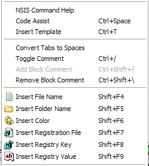
- NSIS Command Help
- Provides contextual detailed hover help for the NSIS keyword that was right-clicked upon. ← Back
Shortcut: F3
- Code Assist
- Provides a scrollable list of available code completions when
activated from a valid line of code in the EclipseNSIS editor.
Completions include both NSIS keywords as well as code templates. ← Back
Shortcut: Ctrl+Space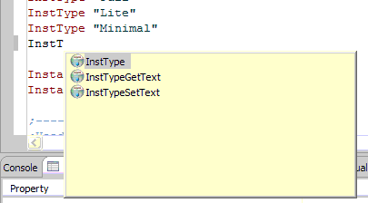
- Insert Template
- Provides a scrollable list of available code templates when activated
from a valid line of code in the EclipseNSIS editor. When a template is
inserted, the user is prompted to complete any unresolved template
parameters. See Template Preferences
for more information about code templates. ← Back
Shortcut: Ctrl+T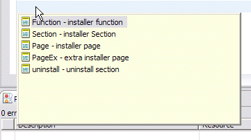
- Convert Tabs to Spaces
- Replaces tab characters with spaces in the script. If text is selected, then only the selected text is operated on, otherwise all text is operated on. To set the width of a tab character in terms of spaces see the Text Editor Preference page. ← Back
- Toggle Comment
- Uncomments the currently selected lines of code if all of them are
commented and comments them otherwise. The single line comment character ";" is used to prefix lines to be commented. ← Back
Shortcut: Ctrl+/
- Add/Remove Block Comment
- The Add Block Comment quickly converts a text selection in the EclipseNSIS editor into
a block comment, i.e., delimited by the NSIS multiline comment markers "/*" and "*/". Conversely, the Remove
Block Comment command removes the block comment enclosing the cursor
position. ← Back
Shortcuts: Ctrl+Shift+/ (Add Block Comment) and Ctrl+Shift+\ (Remove Block Comment)
- Insert File Name
- Pops up a file selection dialog box. If
a file is selected in this dialog box, the file's name is inserted in
the code. This is a quick way to add File instructions
to the NSIS script. ← Back
Shortcut: Shift+F4
- Insert Folder Name
- Pops up a folder selection dialog box.
If a folder is selected in this dialog box, the folder's name is
inserted in the code. This is a quick way to add File
instructions for folders to the NSIS script. ← Back
Shortcut: Shift+F5
- Insert Color
- Pops up a color selection dialog box. If a
color is selected in this dialog box, the color's RGB hex value is
inserted in the code. This is a quick way to add NSIS commands which
accept a color value, e.g. BGGradient, to the NSIS
script. ← Back
Shortcut: Shift+F6
- Insert Registration File
- Pops up a file selection dialog box to choose a Windows registration (.REG) file. If a registration file is selected, its contents are inserted into the
current NSIS script in the form of WriteRegXXXX commands. A .REG file can be
created by using the Export command in Regedit.exe. Windows shell folder names (e.g., $WINDIR, $SYSDIR, etc) are automatically
substituted in inserted
entries.
Note: REG_MULTI_SZ values will not be inserted since they are not supported by NSIS. ← Back
Shortcut: Shift+F7
- Insert Registry Key
- Pops up a dialog to select a Windows registry key. If a registry key is selected in this dialog, its contents are inserted into the
current NSIS script in the form of WriteRegXXXX commands. Windows shell folder names (e.g., $WINDIR, $SYSDIR, etc) are automatically
substituted in inserted
entries.
Note: REG_MULTI_SZ values will not be inserted since they are not supported by NSIS. ← Back
Shortcut: Shift+F8
- Insert Registry Value
- Pops up a dialog to select a Windows registry value. If a registry value is selected in this dialog, its contents are inserted into the
current NSIS script in the form of a WriteRegXXXX command. Windows shell folder names (e.g., $WINDIR, $SYSDIR, etc) are automatically
substituted in the inserted entry.
Note: REG_MULTI_SZ values will not be inserted since they are not supported by NSIS. ← Back
Shortcut: Shift+F8
Drag and Drop
The EclipseNSIS Editor makes it easy to add files and folders to the NSIS script. Files and folders can be simply dragged from Windows Explorer or the Desktop and dropped to the desired location in the script. They will then be added to script using NSIS File instructions. Registration files (.REG extension) are processed to extract the Registry keys and values, which are then added to the script using the appropriate NSIS registry instructions. This behavior can be modified in the EclipseNSIS editor preference page.
Vertical and Overview Rulers
The vertical ruler is to the left of the editing area in the EclipseNSIS
editor and is used to show text ranges and line-based annotations (e.g.,
problems, bookmarks, tasks, etc.) adjacent to their text line.
The overview ruler is on the right hand side of the editing area, and is used
to show annotations concerning the entire script. These annotations are
shown relative to their position in the script and do not move as the user
scrolls the script source. There usually is a corresponding annotation on
the vertical ruler when that portion of the script is visible.
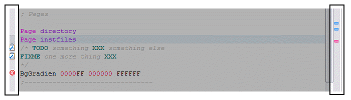
Menu and Toolbar
The EclipseNSIS editor includes a menu on the main menubar as well as a toolbar which provide quick access to some EclipseNSIS-related commands. Click on the image below for help on a particular command.
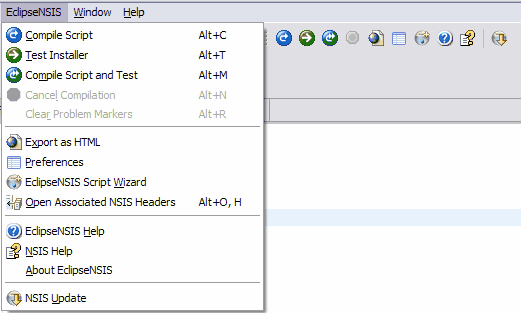
- Compile Script
- Compiles the NSIS script currently being edited. If the current file being edited is an NSIS header (*.nsh), the command is disabled unless the header has an associated NSIS script, in which case the associated NSIS script is compiled. This command is
disabled when a script is being compiled, even if it is not the current
script. ← Back
Shortcut: Alt+C
- Test Installer
- Runs the installer generated when the NSIS script currently being
edited was compiled. This command is only enabled if a valid installer exists. See the Compiling and Testing section for more details. If the current file being edited is an NSIS header (*.nsh), the command is disabled unless the header has an associated NSIS script, in which case the installer generated for the associated NSIS script is run. This command is
disabled when a script is being compiled, even if it is not the current
script. ← Back
Shortcut: Alt+T
- Compile Script and Test
- Compiles the NSIS script currently being edited and runs the
installer generated if there were no errors. If the current file being edited is an NSIS header (*.nsh), the command is disabled unless the header has an associated NSIS script, in which case the associated NSIS script is compiled and tested. This command is disabled
when a script is being compiled, even if it is not the current script.
← Back
Shortcut: Alt+M
- Cancels Compilation
- Cancels NSIS script compilation. This command is enabled only when a
script is being compiled, even if it is not the current script. ← Back
Shortcut: Alt+N
- Clear Problem Markers
- Clears any problem markers generated the previous time this NSIS script was compiled. This command is enabled only when the script is not being compiled, and if it has existing problem markers. ← Back
Shortcut: Alt+R
- Export as HTML
- Export the NSIS script as an HTML file. The exported HTML file includes the same syntax coloring as the script as well as line numbering and folding (if they have been enabled). The exported HTML file is compatible with Internet Explorer 5.x and above, Netscape 6.x and above as well as Mozilla Firefox 1.x and above. Click here for an example. ← Back
- Preferences
- Opens the Eclipse Workbench Preference Dialog, with the EclipseNSIS item pre-selected. ← Back
- EclipseNSIS Script Wizard
- Opens the EclipseNSIS Script Wizard dialog, which is a GUI for generating NSIS scripts. See the Script Wizard section for more details. ← Back
- Open Associated NSIS File(s)
- Opens the NSIS file(s) associated with the current file. Depending upon whether the current file is an NSIS script (*.nsi)
or an NSIS header (*.nsh), this will open the associated header files (
 ) or the associated script file (
) or the associated script file ( ), respectively. ← Back
), respectively. ← Back
- EclipseNSIS Help
- Opens the Eclipse Platform Help browser, with the EclipseNSIS section displayed. ← Back
- NSIS Help
- Displays NSIS help. This uses either the Eclipse Platform help browser or the EclipseNSIS integrated help browser, depending upon the preference setting. ← Back
- About EclipseNSIS
- Opens the EclipseNSIS About dialog. ← Back
- NSIS Update
- Runs NSIS Update. ← Back
Code Outline
EclipseNSIS includes a code outline view for the currently-active NSIS script in the EclipseNSIS editor. The outline view lists structural elements in the NSIS script. The structural elements currently supported by the outline view are:
- !define
- !if
- !ifdef
- !ifndef
- !ifmacrodef
- !ifnmacrodef
- !include
- !macro
- Function
- Section
- SubSection/SectionGroup
- Page
- PageEx
- Var
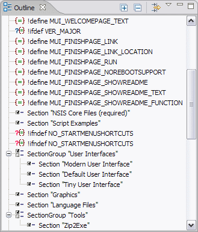
- Expand All
- Expand all code outline elements.
- Collapse All
- Collapse all code outline elements.
- Filter
- Filter code outline elements. This opens a dialog which can be used to specify code outline elements which should be omitted from the outline display.
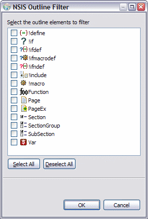
Code Folding
The EclipseNSIS editor supports folding of certain types of code regions. The code regions supported are any NSIS keywords which are multi-line in nature, e.g., Function, Section, !macro, etc. Multi-line comments are also supported for code folding. Click on the image below for a preview of how folding works in the EclipseNSIS editor.
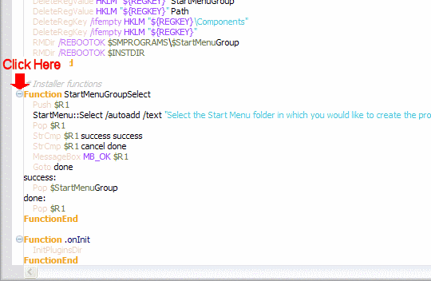
Code folding functions are also available on the vertical ruler context menu and as keyboard shortcuts.

- Toggle Folding
- Turn folding on or off in the current NSIS editor.
Shortcut: Ctrl+NumPad /
- Expand All
- Expand all folded code regions in the current NSIS editor.
Shortcut: Ctrl+NumPad *
- Expand
- Expand the folded code region at the caret position in the current NSIS editor.
Shortcut: Ctrl+NumPad +
- Collapse
- Collapse the folded code region at the caret position in the current NSIS editor.
Shortcut: Ctrl+NumPad -
- Collapse All
- Collapse all expanded code regions in the current NSIS editor.
Shortcut: Ctrl+Shift+NumPad /
Task Tags
When a NSIS script is saved in the EclipseNSIS editor, it is automatically scanned for any task tags in commented text. Whereever a task tag is encountered, the EclipseNSIS editor automatically generates an Eclipse Workbench task. These tasks are shown in the editor using markers in the vertical and overview rulers, and can also be viewed in the Eclipse Workbench Tasks view. The task tags can be configured using the Task Tags preference page.
Integrated Help
EclipseNSIS also provides integrated, context sensitive help while working with NSIS scripts. This is available in two forms- hover help and the NSIS Users Manual.
- Hover Help
Hover help is context-sensitive help which is provided in-place in the editor using small pop-up windows. It is available in two flavors:
- Quick Hover Help
-
When the mouse hovers over an NSIS keyword, quick hover help for that keyword is displayed. Pressing the F2 key displays the keyword help in the help browser, and pressing the F3 key provides detailed hover help.
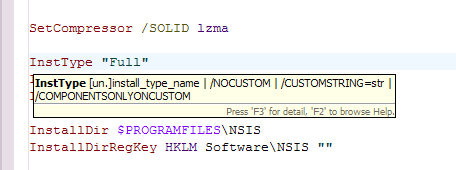
- Detailed Hover Help
-
Pressing the F3 key either in the quick hover help or when the EclipseNSIS editor caret is in a keyword, displays detailed hover help for the keyword. Pressing the F2 key displays the keyword help in the NSIS Users Manual .
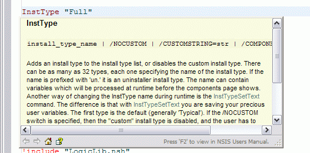
- NSIS Users Manual
-
EclipseNSIS provides access to detailed NSIS help in the form of the NSIS Users Manual. This can be accessed in two ways:
- Eclipse Platform Help Browser
- Open the help browser and then navigate to EclipseNSIS User Guide→NSIS Users Manual.

- EclipseNSIS NSIS Users Manual Browser
- Open the Eclipse Workbench Show View dialog and navigate to the
EclipseNSIS→NSIS Users Manual view. This will open the NSIS Users Manual browser.
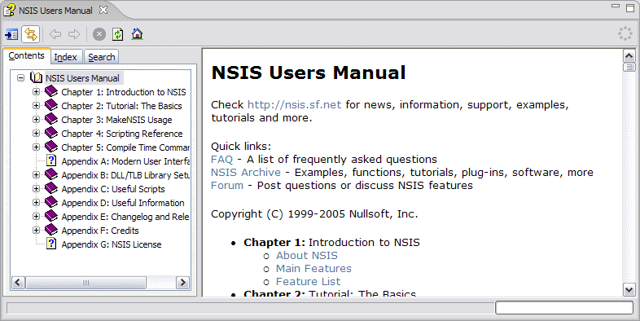
- Synchronize Contents
- Keep the Contents explorer synchronized with the browser pane.
- Browser Pane
- The browser pane displays the NSIS Users Manual content.
Additionally, detailed help on NSIS keywords can be directly accessed by either:
- Clicking on a keyword in the EclipseNSIS editor and pressing the F2 key, or
- Pressing the F2 key in either the quick or detailed hover help popups.
The preferred browser for displaying detailed help can be configured in the EclipseNSIS preferences page. Once this has been done, pressing the F2 key or selecting the NSIS Help menu or toolbar item will display detailed help in the chosen browser- i.e., either the Eclipse Workbench help or the EclipseNSIS integrated browser.
Note: Detailed Hover Help and Help Browser are only available if the NSIS Users Manual help file (NSIS.chm) is installed in the NSIS home directory.
Previous | Contents | Next
Copyright © 2004-2010 Sunil Kamath (IcemanK).